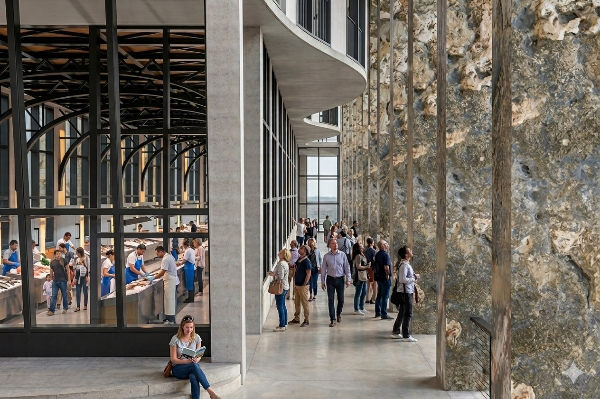
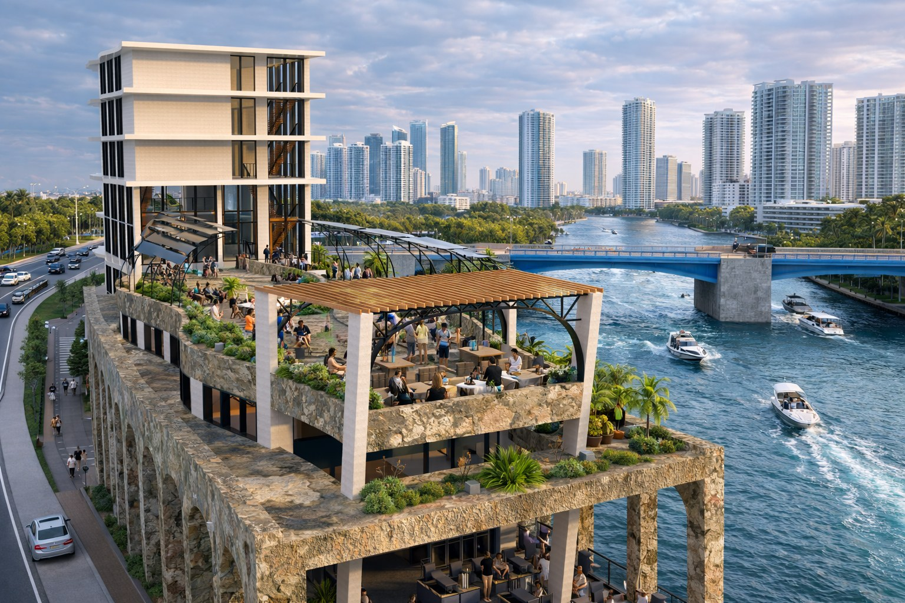
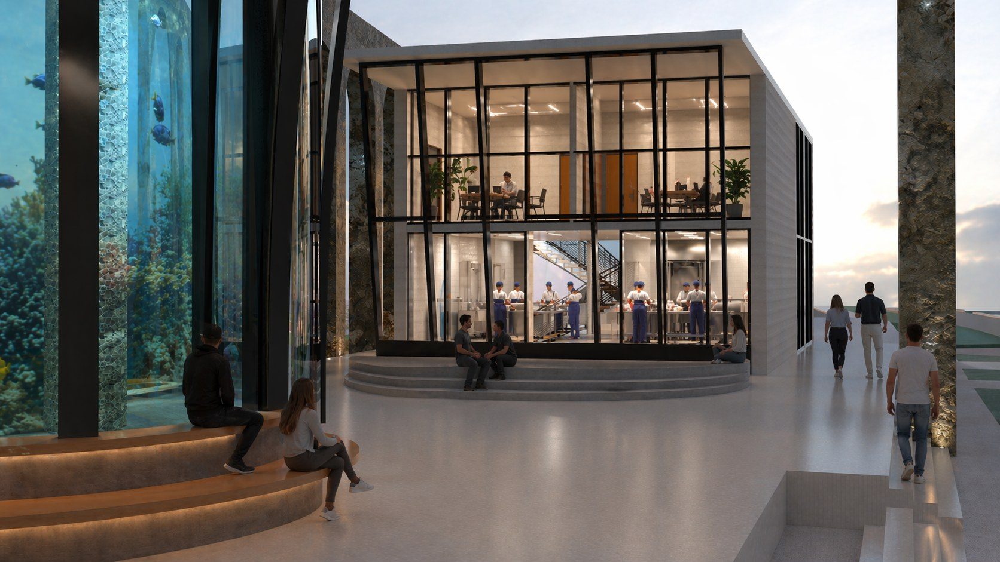
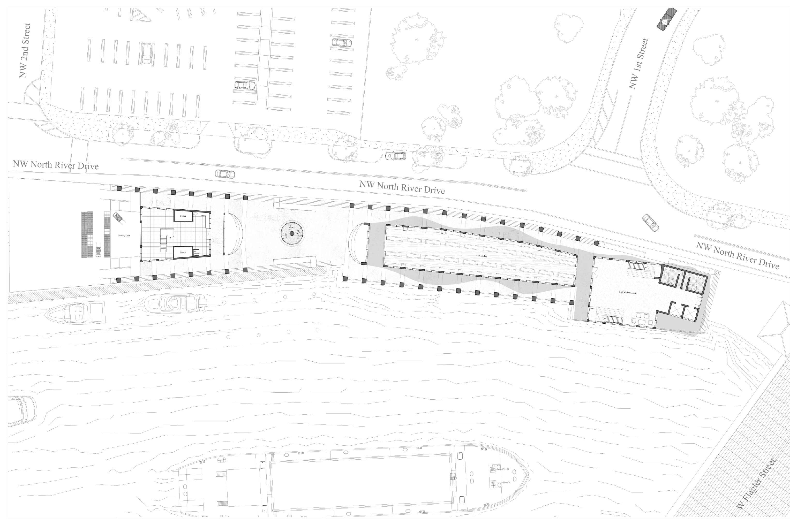
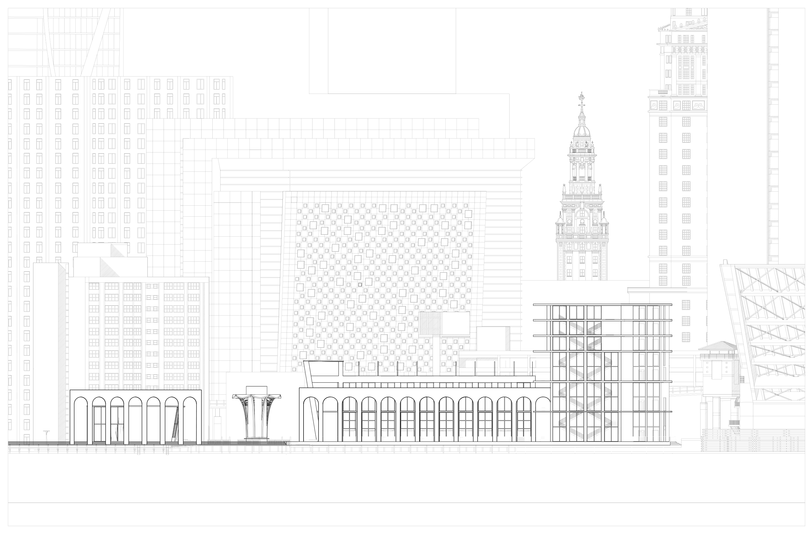

A working fish market on the Miami River. A stone arcade opens the waterfront back to the public, with the market floor at the water and terraces above the arches. Sited against the downtown skyline and designed from the river inward.


Arcade Concourse

Market Floor

Rooftop Dining Terrace

Aquarium Entrance

First Floor Plan in Context

River Elevation in Context